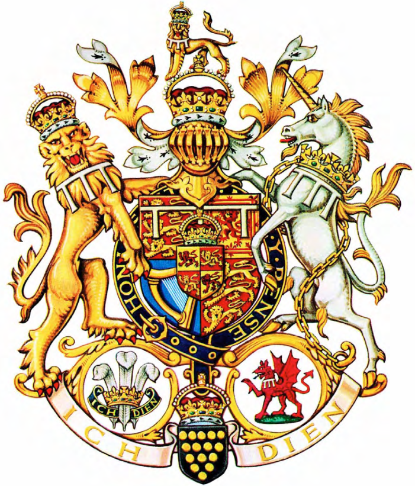
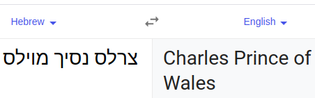
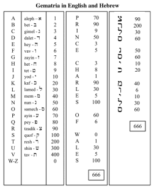
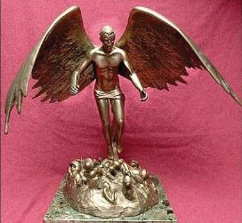

Everyone immediately recognizes 666 as "the number of the beast." But what is the beast, and why does it have a number? And why is its number so famous? The number of the beast is one of the most intriguing parts of Jesus' prophecy recorded within the book of Revelation. The verse describing the number reveals that it is the number of a man, so who is this man?
Revelation 13:18 - "This calls for wisdom: let the one who has understanding calculate the
number of the beast, for it is the number of a man, and his number is 666."
The man whose number is 666 is typically referred to as the Antichrist or the man of lawlessness. Paul the Apostle described the Antichrist's reign, which must take place before Jesus' return:
2 Thessalonians 2:3-4 - "Let no one deceive you in any way. For that day will not come, unless the rebellion comes
first, and the man of lawlessness is revealed, the son of destruction, who opposes and exalts
himself against every so-called god or object of worship, so that he takes his seat in the temple
of God, proclaiming himself to be God."
The Bible provides multiple details about the Antichrist that help us identify him in advance, so in that spirit, let's walk through the following criteria and see if we can make a compelling case that someone currently alive fits the bill.
1) Imagery pertaining to the individual
2) The calculation that should compute to 666
3) The abomination that makes desolate
Revelation and Daniel portray the Antichrist as a beast, but with quite different imagery:
Revelation 13:2 - "And the beast that I saw was like a leopard; its feet were like a bear's, and its mouth
was like a lion's mouth. And to it the dragon gave his power and his throne and great authority."
Daniel 7:8 - "...there came up before them another horn, a little one, before which three of the first horns
were plucked up by the roots. And behold, in this horn were eyes like the eyes of a man, and a mouth speaking
great things."
Observe how Prince Charles of Wales' official Coat of Arms contains all this imagery to the detail:

On the left we see a beast that looks like a leopard, has feet like a bear's, and clearly has a mouth like a lion's mouth. On the right we see a little horn (unicorn). It wears a necklace featuring three horns plucked by up the roots. And it has eyes like the eyes of a man, i.e., there are whites in its eyes unlike the eyes of a horse which are all dark. And its mouth is open and its tongue is out, so it appears to be speaking great things. This Coat of Arms also features the "great red dragon" (Rev. 12:3) which symbolizes Satan and gives the beast his power and his throne and great authority.
People love to come up with their own personal method by which to derive the number 666 from whomever they claim to be the Antichrist. However, when Rev. 13:18 was written, every person reading it knew what system was implied. Ancient Hebrew and Greek did not have separate symbols for numbers like English does, so to write a number in numeral form the characters of their respective alphabets were assigned values. To calculate the "number of a man" in these times, one would simply sum all the letters (representing numbers) in the name.
Every number in the original Greek New Testament was written using words, except two exceptions that were written in numeral form: this χξς (666) in Rev. 13:18 and the ρμδ (144) that comprises 144,000 in Rev. 7:4, 14:1, and 14:3. By writing these numbers in numeral form, the text is specifying the system by which the calculation should succeed. In Hebrew (the original language of the biblical numbering system) there are 22 letters in the alphabet, with the first 9 letters corresponding with the numbers 1, 2, ..., 9, the next 9 letters corresponding with the numbers 10, 20, ..., 90, and the last 4 letters corresponding with the numbers 100, 200, 300, and 400.


Not only does "Charles, Prince of Wales", (the Prince's official title by which he is known around the world) compute to 666 using the original Hebrew system, it does so in English as well. Prince Charles doesn't have a last name due to his status as a high-ranking royal, so it makes sense to use his official title for the calculation.
Jesus warns that the great tribulation will elapse after people see "the abomination of desolation spoken of by the prophet Daniel, standing in the holy place" (Matt 24:15). This abomination is referred to in Revelation as the "image of the beast." Life is breathed into the image by the false prophet, and the image causes everyone that will not worship it to be slain (Rev 13:15).
In March 2002, while trekking through Brazilian rain forests, Prince Charles was presented with a miniature version of a statue that could be a mock-up of what will be the abomination that makes desolate. It depicts him as an angelic figure with huge wings, standing on a mass of human bodies that are looking up to him as their saviour, and the inscription on the statue's base reads "Saviour of the World." But instead of denouncing the statue as blasphemous when he saw it (Jesus is the only "Saviour of the World"), Prince Charles said he was "touched and deeply amazed" and gave permission for the Brazilian Officials to create the larger version.

The following verses likely pertain to the Antichrist. Because biblical prophecy is often fulfilled in unexpected ways, so I will refrain from guessing how exactly these verses will be fulfilled.
Rev. 17:11-13 - "As for the beast that was
and is not, it is an eighth but it belongs to the
seven, and it goes to destruction. And the ten horns
that you saw are ten kings who have not yet received
royal power, but they are to receive authority as
kings for one hour, together with the beast. These
are of one mind, and they hand over their power and
authority to the beast."
Daniel 7:24 - "As for the ten horns,
out of this kingdom ten kings shall arise,
and another shall arise after them;
he shall be different from the former ones,
and shall put down three kings."
Rev. 13:3 - "...seemed to have a mortal wound, but its mortal wound was healed,
and the whole earth marveled as they followed the beast"
Rev. 13:12 - "...first beast, whose mortal wound was healed"
Rev. 13:14 - "...the beast that was wounded by the sword and yet lived"
Rev. 13:5 - "And the beast was given a mouth uttering haughty and blasphemous words,
and it was allowed to exercise authority for forty-two months."
Rev. 13:7 - "And authority was given it over every tribe and
people and language and nation."
Daniel 7:25 - "He shall speak words against the Most High,
and shall wear out the saints of the Most High,
and shall think to change the times and the law;
and they shall be given into his hand
for a time, times, and half a time." (3.5 years is 42 months)
Rev. 13:15-17 - "And it [(the false prophet)] was allowed to give breath to the image of the beast, so that the image of the beast might even speak and might cause those who would not worship the image of the beast to be slain. Also it causes all, both small and great, both rich and poor, both free and slave, to be marked on the right hand or the forehead, so that no one can buy or sell unless he has the mark, that is, the name of the beast or the number of its name."